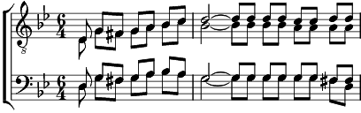

1. Ca fait longtemps qu'on rêve ici
De vous offrir un verre de vin
Mais tout là-haut le vent nous dit
On n'a jamais, jamais le temps.
Ca fait longtemps qu'on rêve ici
De vous chanter notre amitié
Mais la cigale a des fourmis
Et tous les mois n'ont qu'un été.
Refrain:
Marins des étoiles,
Comme à Saint-Malo
Larguez les amarres, on est matelots.
Marins d'une escale, amis de l'écho,
Ohé du rivage! Ohé du bateau !
2. On a le cœur à naviguer
Sur l'océan des lendemains
C'est le plus fort des mariniers
Qui met les voiles au p'tit matin.
"A nos amours, à ta santé!"
Ce soir on est des Roméo
On voudrait bien vous emmener
Dans le pays de nos tonneaux.
Refrain
3. Quand on bourlingue on a vingt ans
Avec un air d'accordéon
Il y a du bleu qui nous attend
Sur les chemins à l'horizon.
La vie c'est comme un grand bateau
Dans le roulis de nos chansons
Il faut des vagues avec des mots
Pour naviguer à la maison
Refrain